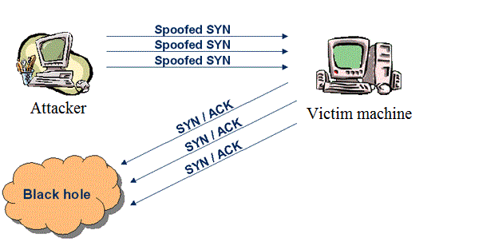
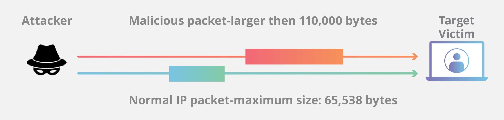
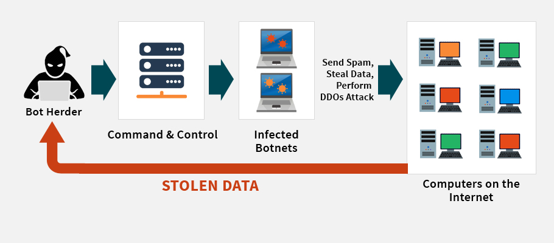

Hacking is the process of changing certain functions without re-engineering the entire software. According to wikepedia a hacker can be refer as a skilled computer programmer, the term "security hacker" has become part of popular culture, someone who, with their technical knowledge, uses bugs or exploits to break into computer systems. Basically, a hacker is someone who finds a clever way to fix a problem with a product or seeks an easy way to improve its function.
DOS is the Denial of service and DDOS means double denial of service. It is a attack on a system's resources so that it cannot respond to service requests. DDOS is attack on system's resources, but it is launched from a large no. of other host machines that are infected by malicious software. Most of the time its's main purpose is to take a system online so that different kind of attack can be launched. Some of the common DDOS attacks are.
In this type of attacks attackers exploits to use of the buffer space between a transmission control protocol(TCP) session. An intruder sends a series of SYN requests to the target network in an effort to use enough server space to keep the device from reacting to valid traffic. The best counter measure against this kind of attack is to place servers behind a firewall configured to stop inbound SYN packets.
This attack causes the length and fragmentation offset fields in sequential Internet Protocol (IP) packets to overlap one another on the attacked host. As the name implies, Teardrop Attack gradually delivers compressed packets to the target system. Such attacks threaten the network layer, and the device must protect it at all costs. You should use the correct firewall network to delete garbage data.
A Smurf attack is a form of a Distributed Denial of Service (DDoS) attack that renders computer networks inoperative. The Smurf program accomplishes this by exploiting the vulnerabilities of the Internet Protocol (IP) and the Internet Control Message Protocol (ICMP). The best way to prevent from this attack is to disable IP-directed broadcasts at the routers and configure the end systems to keep them from responding to ICMP packets from broadcast addressses.
Ping of Death (a.k.a. PoD) is a kind of Denial of Service ( DoS) attack in which the intruder tries to crash, disrupt or freeze the target device or server by submitting malformed or overloaded packets utilising a simple ping order. It can be blocked by using a firewall that will check fragmented IP packets for maximum size.
The botnet is a number of Internet-connected devices, each running one or more bots. Botnets can be used to perform Denial-of - Service Distributed attacks, steal data , send spam, and allow the attacker to access and connect to the device. Cyber criminals are using botnets to create similar disruptions on the Internet. They order their corrupted bot army to flood the website to the extent where it ceases running and/or the access is refused.
Ishwor Khadka | Jun 21, 2020